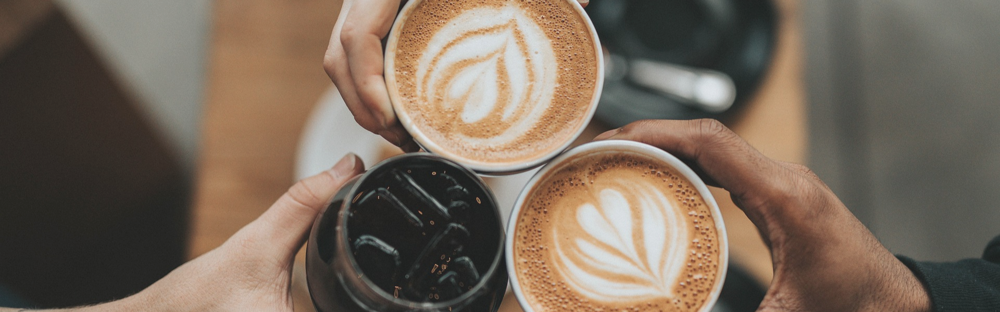
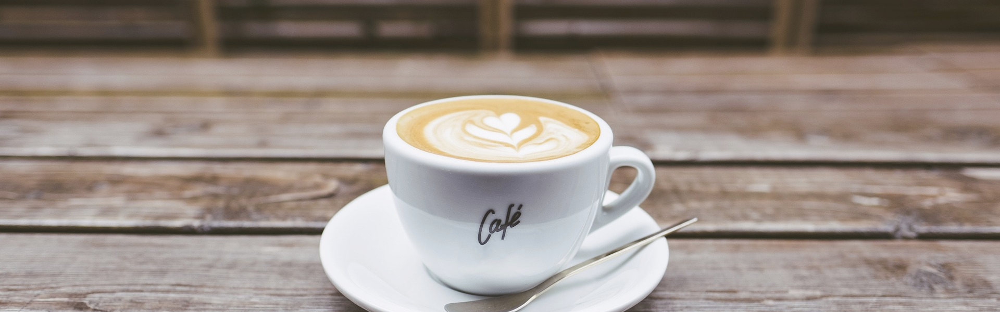

Contamos com as melhores ofertas para você e sua família!

Também somos delivery!

O expresso pode ser apreciado puro, como um shot único, ou como base para uma variedade de outras bebidas de café, como cappuccinos, lattes e macchiatos. Sua versatilidade permite que os baristas e os amantes de café explorem uma ampla gama de opções de sabores e combinações.
As frutas vermelhas, como morangos, framboesas, mirtilos e amoras, trazem um sabor naturalmente doce e ácido que complementa perfeitamente a suavidade da panqueca. O mel adiciona um toque extra de doçura e umidade, criando um equilíbrio delicioso de sabores.
O croissant de provolone pode ser apreciado sozinho como um lanche delicioso ou como acompanhamento em uma refeição. Ele é uma opção versátil que pode ser servida em diferentes ocasiões, desde um café da manhã especial até um lanche rápido ou parte de um brunch.
A Cafeteria Café Alpino é uma instituição renomada com uma história rica e uma tradição de excelência no serviço de café e hospitalidade. Fundada em 1952 por um grupo de amigos apaixonados por café, a Café Alpino rapidamente se tornou um ponto de encontro popular na cidade de São Paulo, Brasil. Localizada em uma charmosa esquina no centro da cidade, a cafeteria ganhou reputação não apenas pela qualidade excepcional de seus grãos de café, mas também pelo ambiente acolhedor e pela atenção aos detalhes em seu serviço ao cliente. Ao longo das décadas, a Café Alpino expandiu-se para oferecer uma variedade de produtos além do café, incluindo doces finos, salgados e outros produtos de confeitaria artesanal. No entanto, o café sempre permaneceu como o destaque do estabelecimento, com uma variedade de métodos de preparo e blends exclusivos que atraem tanto os conhecedores de café quanto os iniciantes. A Cafeteria Café Alpino tem uma história de ser um ponto de encontro para artistas, intelectuais e moradores locais, proporcionando um espaço vibrante para conversas animadas, discussões culturais e momentos de descontração. Ao longo dos anos, a Café Alpino testemunhou muitos eventos importantes na vida da cidade e tornou-se uma parte integrante da comunidade local. Com uma dedicação contínua à qualidade, tradição e inovação, a Cafeteria Café Alpino continua a ser um destino icônico para os amantes de café e um símbolo duradouro da cultura cafeicultora brasileira.